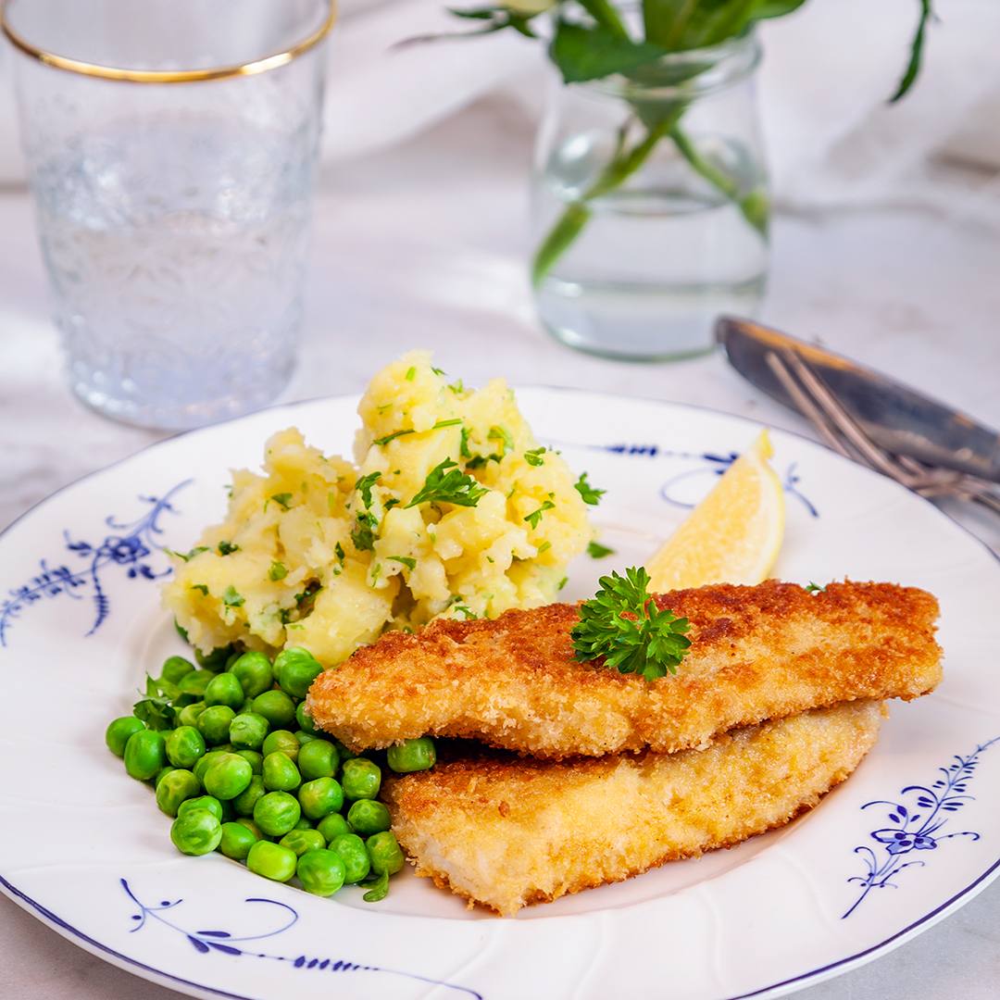

Description
Have you ever wondered how to make homemade fish sticks that are flaky
on the inside and crispy on the outside? Look no more! This recipe is
simple and makes the best fish sticks ever!
Ingredients
- white firm fish fillets
- flour
- egg
- breadcrumbs
-
seasoning (salt, pepper, Italian seasoning, garlic powder, Cajun
seasoning, lemon pepper mix, etc.)
Steps
- Start by cutting fish fillet into 3/4 wide strips.
-
Prepare the breading station in three shallow dishes: one with
flour, one with egg and one with breadcrumbs.
-
Dip each fish piece into flour first, then egg, then breadcrumbs.
- Fry or bake until golden brown.